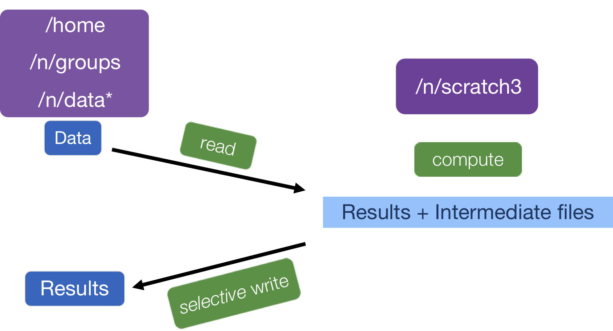

Learning Objectives:
- Create a reusable and efficient workflow for RNA-seq data analysis using shell scripts
Automating the analysis path from Sequence reads to Count matrix
Once you have optimized all the tools and parameters using a single sample (likely using an interactive session), you can write a script to run the whole workflow on all the samples in parallel.
This will ensure that you run every sample with the exact same parameters, and will enable you to keep track of all the tools and their versions. In addition, the script is like a lab notebook; in the future, you (or your colleagues) can go back and check the workflow for methods, which enables efficiency and reproducibility.
Using “scratch space”
Before we get started, let’s talk a little bit about how data are stored on O2. O2, like many clusters, has several different storage options; each of which has different amounts of space available, and is differently backed up. One filesystem is the /n/scratch/ space. This directory has a lot of shared disk space available, but the files are not backed up and they will be deleted if left “untouched” for more than 30 days. This is akin to the /scratch/user space on Biowulf, which is not available from a compute node. I will need to adjust this part of the lesson entirely based on what Biowulf recommends. Get students in the practice of writing to /lscratch?
By design /n/scratch/ is to be used for intermediate files that are created during any analysis. An example is in the schematic below.

Today, we are going to learn how to use the /n/scratch/ storage location as we work on automating our workflow (More information about scratch space on O2. We will be maintaining our data in our (backed up) home directories, but all of the output files will be in scratch space. When we are done, we can copy over only those output files that are essential.
Not relevant for Biowulf: Creating a folder in /n/scratch/
To get started let’s create a folder for ourselves in /n/scratch/ first. We can do so by running the existing script /n/cluster/bin/scratch_create_directory.sh from a login node.
$ sh /n/cluster/bin/scratch_create_directory.sh
When you press enter you will see:
Do you want to create a scratch directory under /n/scratch/users? [y/N]>
Please say y. Next, it will display the guidelines for this folder and ask you to verify that you have read them:
Do you want to create a scratch directory under /n/scratch/users? [y/N]> y
By typing 'YES' I will comply with HMS RC guidelines for using Scratch.
I also confirm that I understand that files in my scratch directory WILL NOT BE BACKED UP IN ANY WAY.
I also understand that 45 DAYS after I last modify a given file or directory in my scratch directory,
it will be DELETED with NO POSSIBILITY of retrieval.
I understand HMS RC guidelines for using Scratch:
Please answer Yes or yes here, once you do you will get some additional information and your command prompt back.
Your scratch directory was created at /n/scratch/users/r/rc_training01.
This has a limit of 25TiB of storage and 2.5 million files.
You can check your scratch quota using the quota-v2 command.
Great, now we all have created a work directory for ourselves in the /n/scratch/ storage space!
Let’s go ahead and create a folder within our /n/scratch/ storage space for the results of our analysis.
mkdir /n/scratch/users/r/$USER/rnaseq_hbc-workshop
When we create our script, we will make sure that all of the analysis output gets saved in the /n/scratch/users/r/$USER/rnaseq_hbc-workshop folder.
Start an interactive session
We will be working with an interactive session with 6 cores.
If you have a session with fewer cores then
exitout of your current interactive session and start a new one with-c 6.
$ srun --pty -p interactive -t 0-3:00 -c 6 --mem 8G --reservation=HBC3 /bin/bash
More Flexibility with variables
We can write a shell script that will run on a specific file, but to make it more flexible and efficient we would prefer that it lets us give it an input fastq file when we run the script. To be able to provide an input to any shell script, we need to use Positional Parameters.
For example, we can refer to the components of the following command as numbered variables within the actual script:
# * DO NOT RUN *
sh run_rnaseq.sh input.fq input.gtf 12
$0 => run_rnaseq.sh
$1 => input.fq
$2 => input.gtf
$3 => 12
The variables $1, $2, $3,…$9 and so on are positional parameters in the context of the shell script, and can be used within the script to refer to the files/number specified on the command line. Basically, the script is written with the expectation that $1 will be a fastq file and $2 will be a GTF file, and so on.
Note that $1, which you may have seen before, is actually a short form of ${1} and we can only use $1 when it is not followed by a letter, digit or an underscore but we can always use ${1}. Using ${1} is best practice and what we will use for the rest of this lesson.
There can be virtually unlimited numbers of inputs to a shell script, but it is wise to only have a few inputs to avoid errors and confusion when running a script that used positional parameters.
This is an example of a simple script that used the concept of positional parameters and the associated variables. You should try this script out after the class to get a better handle on positional parameters for shell scripting. You can also learn more about positional parameters here
We will be using this concept in our automation script, wherein we will accept the full or relative path to a file as input.
Writing the automation script!
We will start writing the script on our laptops using a simple text editor like Sublime Text or Notepad++. Let’s being with the shebang line and a cd command so that our results are all written on /n/scratch/.
#!/bin/bash/
# change directories to /n/scratch/ so that all the analysis is stored there.
cd /n/scratch/users/r/$USER/rnaseq_hbc-workshop/
We want users to input the path to the fastq file as input to the shell script. To make this happen, we will use the ${1} positional parameter variable within the script.
Since ${1} will store the path to the fastq file, including the file name, we will be referring to it every time we need to specify the fastq file in any commands. We could just use the variable ${1}, but that is not an intuitive variable name for a fastq file, is it? So we want to create a new variable called fq and copy the contents of ${1} into it.
# initialize a variable with an intuitive name to store the name of the input fastq file
fq=$1
In the rest of the script, we can now call the fastq file using ${fq} instead of ${1}!
When we set up variables we do not use the
$before it, but when we use the variable, we always have to have the$before it. >For example:
initializing the
fqvariable =>fq=$1using the
fqvariable =>fastqc ${fq}
Next, we want to extract the name of the sample from ${fq} which contains the full name of the file and possibly the path to the file as well. The reason to extract the sample name is so that all the output files from this workflow are appropriately named with sample identifier.
We can obtain the sample name by using the basename command on the ${fq} (or ${1}) variable, and save it in a new variable called samplename.
# grab base of filename for naming outputs
samplename=`basename ${fq} .subset.fq`
echo "Sample name is ${samplename}"
Remember
basename?
- the
basenamecommand: this command takes a path or a name and trims away all the information before the last/and if you specify the string to clear away at the end, it will do that as well. In this case, if the variable${fq}contains the path ”~/rnaseq/raw_data/Mov10_oe_1.subset.fq”,basename ${fq} .subset.fqwill output “Mov10_oe_1”.- to assign the value of the
basenamecommand to thesamplenamevariable, we encapsulate thebasename...command in backticks. This syntax is necessary for assigning the output of a command to a variable.
Next we want to specify how many cores the script should use to run the analysis. This provides us with an easy way to modify the script to run with more or fewer cores without have to replace the number within all commands where cores are specified.
# specify the number of cores to use
cores=6
Next we’ll initialize 3 more variables named genome, transcriptome and gtf, these will contain the paths to where the reference files are stored. This makes it easier to modify the script for when you want to use a different genome, i.e. you’ll just have to change the contents of these variable at the beginning of the script.
# directory with the genome and transcriptome index files + name of the gene annotation file
genome=/n/groups/hbctraining/intro_rnaseq_hpc/reference_data_ensembl38/ensembl38_STAR_index
transcriptome=/n/groups/hbctraining/rna-seq_2019_02/reference_data/salmon_index
gtf=/n/groups/hbctraining/intro_rnaseq_hpc/reference_data_ensembl38/Homo_sapiens.GRCh38.92.1.gtf
We’ll create output directories, but with the -p option. This will make sure that mkdir will create the directory only if it does not exist, and it won’t throw an error if it does exist.
# make all of the output directories
# The -p option means mkdir will create the whole path if it
# does not exist and refrain from complaining if it does exist
mkdir -p results/fastqc/
mkdir -p results/STAR/
mkdir -p results/qualimap/
mkdir -p results/salmon/
Now that we have already created our output directories, we can now specify variables with the path to those directories both for convenience but also to make it easier to see what is going on in a long command.
# set up output filenames and locations
fastqc_out=results/fastqc/
align_out=results/STAR/${samplename}_
align_out_bam=results/STAR/${samplename}_Aligned.sortedByCoord.out.bam
qualimap_out=results/qualimap/${samplename}.qualimap
salmon_out=results/salmon/${samplename}.salmon
salmon_mappings=results/salmon/${samplename}_salmon.out
Keeping track of tool versions
All of our variables are now staged. Next, let’s make sure all the modules are loaded. This is also a good way to keep track of the versions of tools that you are using in the script:
# set up the software environment (use version numbers)
module load fastqc/0.12.1
module load gcc/6.2.0
module load star/2.5.4a
module load samtools/1.15.1
module load java/jdk-1.8u112
module load qualimap/2.2.1
module load salmon/1.8.0
unset DISPLAY
Preparing for future debugging
In the script, it is a good idea to use echo for debugging. echo basically displays the string of characters specified within the quotations. When you have strategically place echo commands specifying what stage of the analysis is next, in case of failure you can determine the last echo statement displayed to troubleshoot the script.
echo "Processing file ${fq}"
You can also use
set -x:
set -xis a debugging tool that will make bash display the command before executing it. In case of an issue with the commands in the shell script, this type of debugging lets you quickly pinpoint the step that is throwing an error. Often, tools will display the error that caused the program to stop running, so keep this in mind for times when you are running into issues where this is not available. You can turn this functionality off by sayingset +x
Running the tools
echo "Starting QC for ${samplename}"
# Run FastQC and move output to the appropriate folder
fastqc -o ${fastqc_out} ${fq}
# Run STAR
STAR --runThreadN ${cores} --genomeDir ${genome} --readFilesIn ${fq} --outFileNamePrefix ${align_out} --outSAMtype BAM SortedByCoordinate --outSAMunmapped Within --outSAMattributes Standard
# Run Qualimap
qualimap rnaseq \
-outdir ${qualimap_out} \
-a proportional \
-bam ${align_out_bam} \
-p strand-specific-reverse \
-gtf ${gtf} \
--java-mem-size=8G
# Run salmon
echo "Starting Salmon run for ${samplename}"
salmon quant -i ${transcriptome} \
-p ${cores} \
-l A \
-r ${fq} \
-o ${salmon_out} \
--seqBias \
--useVBOpt
Last addition to the script
It is best practice to have the script usage specified at the top any script. This should have information such that when your future self, or a co-worker, uses the script they know what it will do and what input(s) are needed. For our script, we should have the following lines of comments right at the top after #!/bin/bash/:
# This script takes a fastq file of RNA-seq data, runs FastQC, STAR, Qualimap and Salmon.
# USAGE: sh rnaseq_analysis_on_input_file.sh <name of fastq file>
It is okay to specify this after everything else is set up, since you will have most clarity about the script only once it is fully done.
Saving and running script
To transfer the contents of the script from your laptop to O2, you can copy and paste the contents into a new file called rnaseq_analysis_on_input_file.sh using vim.
$ cd ~/rnaseq/scripts/
$ vim rnaseq_analysis_on_input_file.sh
Alternatively, you can save the script on your computer and transfer it to
~/rnaseq/scripts/using FileZilla.
We should all have an interactive session with 6 cores, so we can run the script as follows from the ~/rnaseq/ directory:
$ cd ~/rnaseq/
$ sh scripts/rnaseq_analysis_on_input_file.sh ~/rnaseq/raw_data/Mov10_oe_1.subset.fq
Running the script to submit jobs in parallel to the Slurm scheduler
The above script will run in an interactive session one file at a time. But the whole point of writing this script was to run it on all files at once. How do you think we can do this?
To run the above script “in serial” for all of the files on a worker node via the job scheduler, we can create a separate submission script that will need 2 components:
- Slurm directives at the beginning of the script. This is so that the scheduler knows what resources we need in order to run our job on the compute node(s).
- a
forloop that iterates through and runs the above script for all the fastq files.
Below is what this second script (rnaseq_analysis_on_allfiles.slurm) would look like \(DO NOT RUN THIS\):
#!/bin/bash
#SBATCH -p medium # partition name
#SBATCH -t 0-6:00 # hours:minutes runlimit after which job will be killed
#SBATCH -c 6 # number of cores requested -- this needs to be greater than or equal to the number of cores you plan to use to run your job
#SBATCH --mem 8G
#SBATCH --job-name STAR_mov10 # Job name
#SBATCH -o %j.out # File to which standard out will be written
#SBATCH -e %j.err # File to which standard err will be written
# this `for` loop, will take the fastq files as input and run the script for all of them one after the other.
for fq in ~/rnaseq/raw_data/*.fq
do
echo "running analysis on ${fq}"
sh ~/rnaseq/scripts/rnaseq_analysis_on_input_file.sh ${fq}
done
But we don’t want to run the analysis on these 6 samples one after the other! We want to run them “in parallel” as 6 separate jobs.
Note: If you create and run the above script, or something similar to it, i.e. with Slurm directives at the top, you should give the script name .run or .slurm as the extension. This will make it obvious that it is meant to submit jobs to the Slurm scheduler.
Exercise
How would you run rnaseq_analysis_on_allfiles.slurm, i.e. the above script?
Parallelizing the analysis for efficiency
Parallelization will save you a lot of time with real (large) datasets. To parallelize our analysis, we will still need to write a second script that will call the script we just wrote that takes a fastq file as input (rnaseq_analysis_on_input_file.sh). We will still use a for loop, but we will be creating a regular shell script and we will be specifying the Slurm directives differently.
Alternatively, this could also be done using a Slurm array, which lets you submit a collection of similar jobs easily and quickly. You can learn more about Slurm arrays here.
Use vim to start a new shell script called rnaseq_analysis_on_allfiles-for_slurm.sh:
$ vim rnaseq_analysis_on_allfiles_for-slurm.sh
This script loops through the same files as in the previous (demo) script, but the command being submitted within the for loop is sbatch with Slurm directives specified on the same line:
#! /bin/bash
for fq in ~/rnaseq/raw_data/*.fq
do
sbatch -p short -t 0-2:00 -c 6 --job-name rnaseq-workflow --mem 8G --wrap="sh ~/rnaseq/scripts/rnaseq_analysis_on_input_file.sh ${fq}"
sleep 1 # wait 1 second between each job submission
done
Please note that after the
sbatchdirectives the commandsh ~/rnaseq/scripts/rnaseq_analysis_on_input_file.sh ${fq}is in quotes.
$ cd ~/rnaseq/scripts/
$ sh rnaseq_analysis_on_allfiles_for-slurm.sh
What you should see on the output of your screen would be the jobIDs that are returned from the scheduler for each of the jobs that your script submitted.
You can use O2sacct to check progress. And we can check if there are any additional files in our analysis folder.
$ O2sacct
$ ls -l /n/scratch/users/r/$USER/rnaseq_hbc-workshop/
Don’t forget about the scancel command, should something go wrong and you need to cancel your jobs.
NOTE: All job schedulers are similar, but not the same. Once you understand how one works, you can transition to another one without too much trouble. They all have their pros and cons which are considered by the system administrators when picking one for a given HPC environment. Some examples of other job schedulers are LSF, SGE, PBS/Torque.
This lesson has been developed by members of the teaching team at the Harvard Chan Bioinformatics Core (HBC). These are open access materials distributed under the terms of the Creative Commons Attribution license (CC BY 4.0), which permits unrestricted use, distribution, and reproduction in any medium, provided the original author and source are credited.